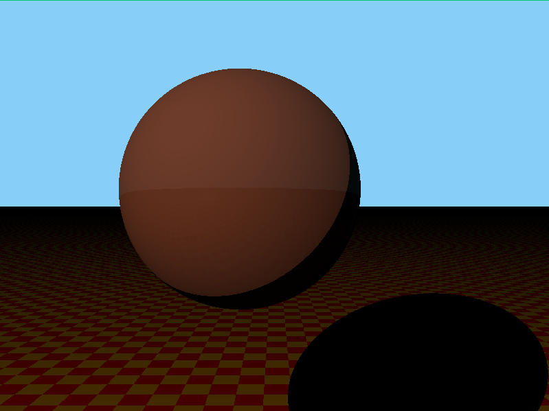

The picture you see to the right is a image made by a ray tracer that I made for a school project. The image is created using only the CPU.
The goal of this project was to learn about graphics, intersections, math, vectors and matrices.
For me this was quite the challenge as the project was mostly all about math and I am not that experienced in math. I already knew how to work with vectors and matrices but I had to program my own math library which I managed to do. I used unit testing to test if my math library was giving me correct result.
Date: 2019
Ray tracing

Ray tracing is 3D computer graphics rendering technique for generating an image by tracing the path of light as pixels in an image plane and simulating the effects of its encounters with virtual objects.
My challenge was learning and understanding the math that comes with a matrix. I now have a pretty good understanding of how matrices operate and how they are used to translate a 2D world to 3D.
So the first thing I did when I started this project was get the math library working. The vectors were not that much of a problem but matrices have some complex functions like inverse which took me some time to understand what that means and how to calculate it.
Once the math library was properly working I started by writing some classes. The most important class in this project was shape. Shape is the parent class of all the shapes and contains a default material which can be changed. The next thing for me to do was to setup a scene which contains shapes and a camera. The camera would send rays from its position for every pixel on the screen into the 3D space and check for intersections and if we find a intersection with a shape that means we have to draw that pixel if the light that is in the scene also hits that same pixel.
To check if a shape got hit by a ray can be an expensive call. Especially when you have many shapes in your scene that needs to be checked if they got hit by a ray. A BVH (bounding volume hierarchy) can help accelerate that process.
I wrote a document explaining BVH and how I implemented it which can be found here: BVH_document
Class diagram ray tracer: ray_tracer_document
Github repository: https://github.com/TimBunk/Ray-Tracer